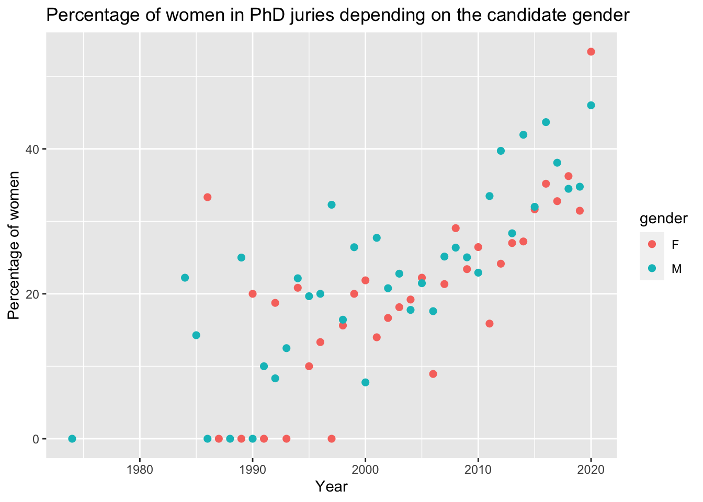

Twitter: Gender Balance in PhD jury
Answers to a tweet posted on 2020-08-26
Gilles Fischer
2020-08-29
# options(encoding = 'UTF-8')
knitr::opts_chunk$set(
fig.width = 7, fig.height = 5,
fig.path = 'figures/',
fig.align = "center",
size = "tiny",
echo = TRUE,
eval = TRUE,
warning = FALSE,
message = FALSE,
results = TRUE,
comment = "")
options(scipen = 3) ## Max number of digits for non-scientific notationrequiredLib <- c(
"knitr",
"readxl",
"dplyr",
"ggplot2",
"hrbrthemes")
for (lib in requiredLib) {
if (!require(lib, character.only = TRUE)) {
install.packages(lib, )
}
require(lib, character.only = TRUE)
}Original tweet
@G__Fischer
Country
Year of PhD defense
Gender
Number of women/men in your jury
This tweet recorded more than 2k answers on 2020-08-29
Dataset
Answers were manually recorded with the kind help of @Zhou_Xu_ into an excel file PhD_twitter_stat.xlsx.
raw.data <- read_excel("~/Documents/Twitter_gender_balanced/PhD_twitter_stat.xlsx")
kable(head(raw.data, n = 5), caption = "First 5 lines of the excel file")| country | year | gender | women | men |
|---|---|---|---|---|
| UK | 2010 | M | 0 | 2 |
| Ireland | 2018 | M | 0 | 3 |
| USA | 1998 | F | 1 | 3 |
| USA | 2006 | M | 2 | 2 |
| UK | 1996 | M | 2 | 3 |
# clean manual record errors
raw.data$gender[raw.data$gender=="W"] <- "F"
raw.data$gender[raw.data$gender=="H"] <- "M"
raw.data$country[raw.data$country=="france"] <- "France"
# count by country and gender
country.gender <- raw.data %>% count(country, gender)
# prop female in jury per year
raw.data$prop.w <- 100 * raw.data$women/(raw.data$women + raw.data$men)
prop.year.w <- aggregate(raw.data$prop.w, by = list(raw.data$year), FUN = mean)
# prop female in jury per year and per candidate gender
prop.year.w.F <- aggregate(raw.data$prop.w[raw.data$gender=="F"], by = list(raw.data$year[raw.data$gender=="F"]), FUN = mean)
prop.year.w.F$gender <- "F"
colnames(prop.year.w.F) <- c("year", "prop.w", "gender")
prop.year.w.M <- aggregate(raw.data$prop.w[raw.data$gender=="M"], by = list(raw.data$year[raw.data$gender=="M"]), FUN = mean)
prop.year.w.M$gender <- "M"
colnames(prop.year.w.M) <- c("year", "prop.w", "gender")
prop.year.w.gender <- rbind(prop.year.w.F, prop.year.w.M)
# subset raw.data for countries with more than 30 answers
t.country <- table(raw.data$country)
raw.data.country <- subset(raw.data, country %in% names(t.country[t.country > 50]))
prop.year.w.country <- aggregate(raw.data.country$prop.w, by = list(raw.data.country$year, raw.data.country$country), FUN = mean)
colnames(prop.year.w.country) <- c("year", "country", "prop.w")
# total number of jury members
raw.data$members <- raw.data$women + raw.data$men- The total number of recorded participants was 1083 and included 559 women, 521 men and 3 non-binary persons.
- The answers came from 40 different countries.
- PhD were defended between 1974 and 2020.
- The total number of members per jury ranged from 1 to 10.
Plots
# stacked barplot by country and gender
ggplot(country.gender, aes(fill=gender, y=n, x=country)) +
geom_bar(position="stack", stat="identity") +
theme(axis.text.x = element_text(angle = 90, vjust = 0.5, hjust=1)) +
ggtitle("Country and gender of participants") +
ylab("Number of participants") +
xlab("Country")# hist year
ggplot(raw.data, aes(x=year)) +
geom_histogram(binwidth=3, fill="#69b3a2", color="#e9ecef", alpha=0.9) +
ggtitle("Year of PhD defense") +
ylab("Number of participants") +
xlab("Year")# percentage women in jury
ggplot(prop.year.w, aes(x=Group.1, y=x)) +
geom_point() +
ggtitle("Percentage of women in PhD juries") +
ylab("Percentage of women") +
xlab("Year")
# percentage women in jury depending on candidate gender
ggplot(prop.year.w.gender, aes(x=year, y=prop.w, color=gender)) +
geom_point(size=2) +
ggtitle("Percentage of women in PhD juries depending on the candidate gender") +
ylab("Percentage of women") +
xlab("Year")# percentage of wommen in jury by country (n>50)
ggplot(prop.year.w.country, aes(x=year, y=prop.w, color=country)) +
geom_line() +
ggtitle("Percentage of women in PhD juries depending on country") +
ylab("Percentage of women") +
xlab("Year")